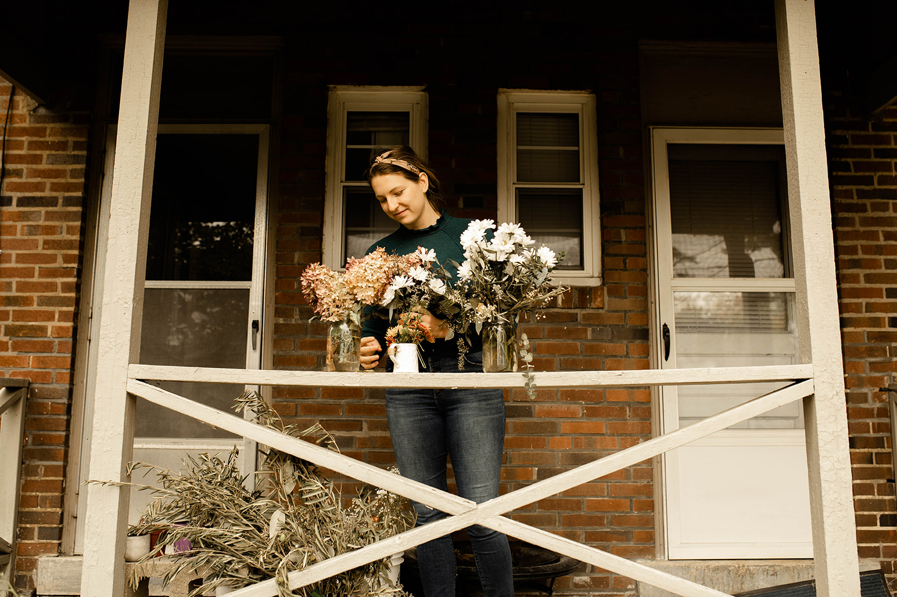

"Hi there! Thank you for your interest in Full Circle Floral. A little bit about me: I was born in Columbus, Ohio, but grew up in Carmel, Indiana. I moved back to Columbus to swim on the OSU Synchronized Swimming Team and study Environment, Economy, Development, and Sustainability (EEDS). The "seed" for Full Circle Floral was planted after I married my college sweetheart, Austin, in July 2019 and we had so many beautiful flowers that we brought home after the wedding. We left for our honeymoon the next day, and by the time we came back, all of our wedding flowers were decaying. I wished that someone could have enjoyed the flowers while we were gone. I'm also always disappointed with how much flowers cost at a lot of florists/grocery stores, so I had been dreaming up a way to solve the single use flower issue, as well as the exorbitant cost of flowers issue. In 2019 I worked for the Ohio Environmental Council and after their annual Green Gala, I sold the dried flower centerpieces as a mini-fundraiser for the OEC, and raised over $200! The following summer, as we all know, COVID stopped the world in its tracks and people began venturing outside more. It's no secret that community gardens are essential to the fabric of a neighborhood, and during the pandemic, it became even more apparent how important they are. My first flower donation was from a high school friend's dad's funeral. She wanted the flowers that were gifted at his funeral to go towards a good cause, so she donated them to Full Circle Floral to be resold to raise money for Highland Youth Garden and Cultivate CDC. From there, the word spread, and as people began to have weddings again, they were excited about donating their flowers to Full Circle Floral to raise money for their favorite Columbus community garden. So here we are! Reselling event flowers to raise money for gardens. I also fell in love with preserving and pressing flowers during the summer of 2020, so I'm happy to offer couples the option to preserve their special flowers for a lifetime. Thanks for being here!"